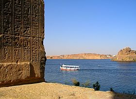
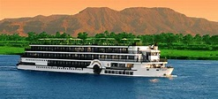
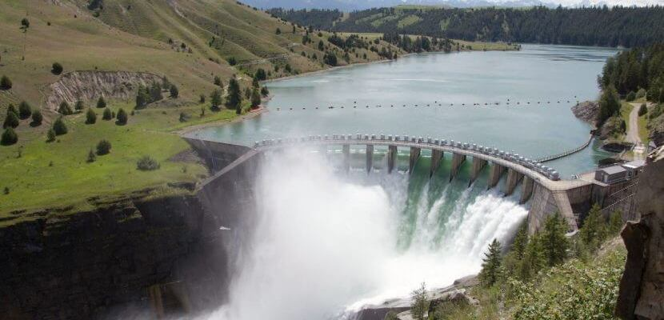

le Nil
 Le Nil (prononcé [nil]) est un fleuve d'Afrique. Avec une longueur d'environ 6 700 km, c'est avec le fleuve Amazone, le plus long fleuve du mondenotes 1. Il est issu de la rencontre du Nil Blanc et du Nil Bleu. Le Nil blanc (Nahr-el-Abiad) prend sa source au lac Victoria (Ouganda, Kenya, Tanzanie) ; le Nil bleu (Nahr-el-Azrak) est issu du lac Tana (Éthiopie). Ses deux branches s'unissant à Khartoum, capitale du Soudan actuel, le Nil se jette dans la Méditerranée en formant un delta au nord de l'Égypte. En comptant ses deux branches, le Nil traverse le Rwanda, le Burundi, la Tanzanie, l'Ouganda, l'Éthiopie, le Soudan du Sud, le Soudan et l'Égypte. Il longe également le Kenya et la République démocratique du Congo (respectivement avec les lacs Victoria et Albert), et son bassin versant concerne aussi l'Érythrée grâce à son affluent du Tekezé. Le Nil est la voie qu'empruntaient les Égyptiens pour se déplacer. Il apporte la vie en fertilisant la terre et garantit l'abondance. Il joua un rôle très important dans l'Égypte antique, du point de vue économique, social (c'était autour de lui que se trouvaient les plus grandes villes), agricole (grâce au précieux limon des crues) et religieux. Fleuve nourricier d'un grand peuple, il fut divinisé sous le nom d'Hâpynotes 2, personnifiant la crue du Nil dans la mythologie égyptienne. La crue du Nil, qui avait lieu chaque été et qui apportait le limon noir permettant la culture de ses rives, est restée longtemps un phénomène inexpliqué. C'est de ce limon noir que vient le nom antique de l'Égypte, Kemet, qui veut dire « la terre noire ». De nos jours, les eaux limoneuses du Nil sont captées et redistribuées sur les terres agricoles grâce aux barrages de Ziftah, d'Assiout, d'Hammadi, d'Esna et surtout aux deux barrages géants d'Assouan, l'ancien et le grand barrage, dont la construction dans les années 1970 a nécessité le déplacement de plusieurs temples dont ceux d'Abou Simbel, qui auraient été noyés dans la retenue du lac Nasser.
Valee du nil
 Le majestueux Nil alimente l'Égypte en eau depuis des millénaires. Digne de sa réputation de plus grand musée à ciel ouvert du monde, la Vallée du Nil abrite des milliers de monuments, comme Louxor et Assouan. Ne ratez pas Karnak et ses temples, les douzaines de tombes de la Vallée des Rois, les énormes temples de pierre d'Abu Simbel ou le magnifique temple de Louxor. Les visiteurs peuvent monter à bord d'une felouque ou d'un navire de croisière pour admirer ses sites époustouflants depuis le Nil ou prendre un train au départ du Caire.
Lieux a ne pas rater
 Le barrage hydraulique d’Assouan sur le Nil a été achevé en 1970. Haut de 111 mètres, il est l'un des plus importants du monde. Sa construction a été initiée par le président égyptien Gamal Abdel Nasser. C'est le pharaon Ramsès II qui a décidé de l'édification des deux temples d'Abou Simbel. Le plus grand est à la gloire des divinités égyptiennes et du monarque. Le second célèbre Néfertari, la femme de Ramsès II. Louxor était connu sous le nom de Thèbes durant l'Antiquité. La cité accueille la vallée des rois, qui abrite les sépultures de plusieurs pharaons ainsi que celles de leurs épouses et de leurs enfants. Ramsès Ier a fait construire, à proximité, la vallée des reines. Le site archéologique de Karnak rassemble plusieurs temples. Le lieu est classé patrimoine mondial historique depuis 1979. Le temple le plus imposant est celui dédié au dieu Amon. Le site de Gizeh rassemble les trois grandes pyramides et le Sphinx. La pyramide de Khéops, la plus grande, est la seule des sept merveilles du monde encore visible. Les trois pyramides sont les tombeaux des trois pharaons Khéops, Képhren et Mykérinos. Philae était une ville de l'antiquité égyptienne qui a été noyée par la construction du barrage d'Assouan. Les temples ont été déplacés puis reconstruits entre 1974 et 1976 sur l'île d'Aguilkia.